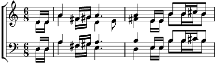

1. [Solo] Au départ de nos rêves, au détour des chansons
Le soleil qui se lève reconnaît ton avion, ton bel avion
L'espoir du temps qui va, l'espoir danse
Dans nos cœurs c'est la fête,
Cent ans déjà
Refrain:
Failloubaz envole-toi !
Failloubaz envole-toi de la Broye.
Pour un ciel tu nous entraînes,
On y croit, envole, envole-toi
C'est l'envie, c'est la vie
Failloubaz envole, envole-toi
2. [Mixte] Un passage en quadrille fait trembler les clochers.
Les garçons et les filles se voient tous embarquer, tous embarquer
Blériot en est si fière, Blériot vote
Près des blés, près des vignes. Le nez en l'air
Refrain
5. [Tous] Colle au ciel un message que la paix nous revient
Chaque fois qu'au village un enfant va plus loin, il va plus loin
Cavale un air d'ici,
Pour choisir une étoile dans l'infini.
Refrain
Coda:
c'est la vie que l'on sème
Failloubaz! CENT ANS DE JOIE!